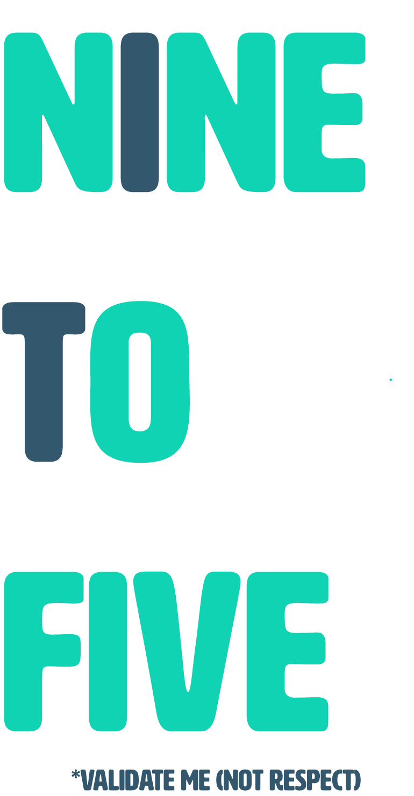

A podcast about employment hosted by
Ali FitzGerald
and
Emma Spencer
. Tune in as we discuss underemployment, asking for what you want, and making tough decisions, as well as ask the age-old question, "Did you cry today?"